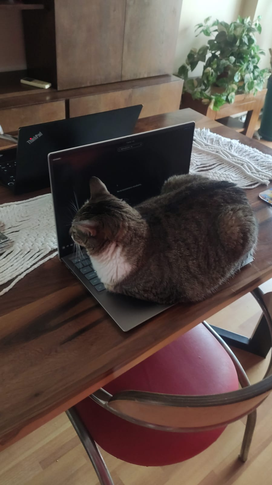

Encima del teclado

Este no es un rincón fijo, pero sí uno infaltable: el teclado de la notebook, siempre en el momento menos indicado. Si hay algo tibio, con luz de pantalla y en medio de mi escritorio, ahí va a estar Mia, instalada como si fuera parte del equipo de trabajo.